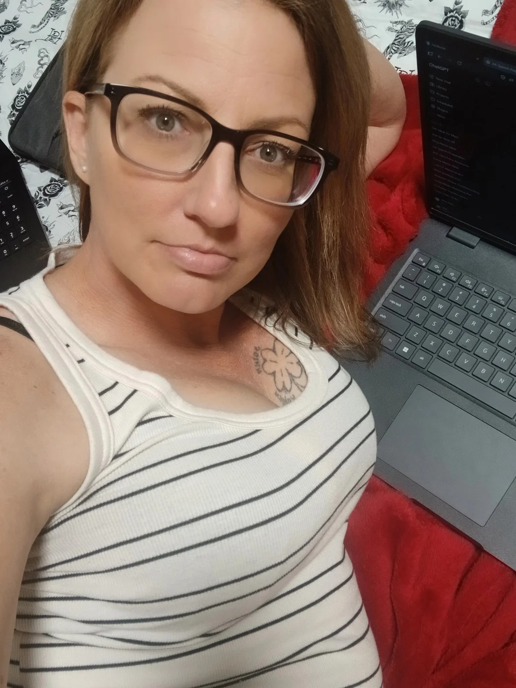
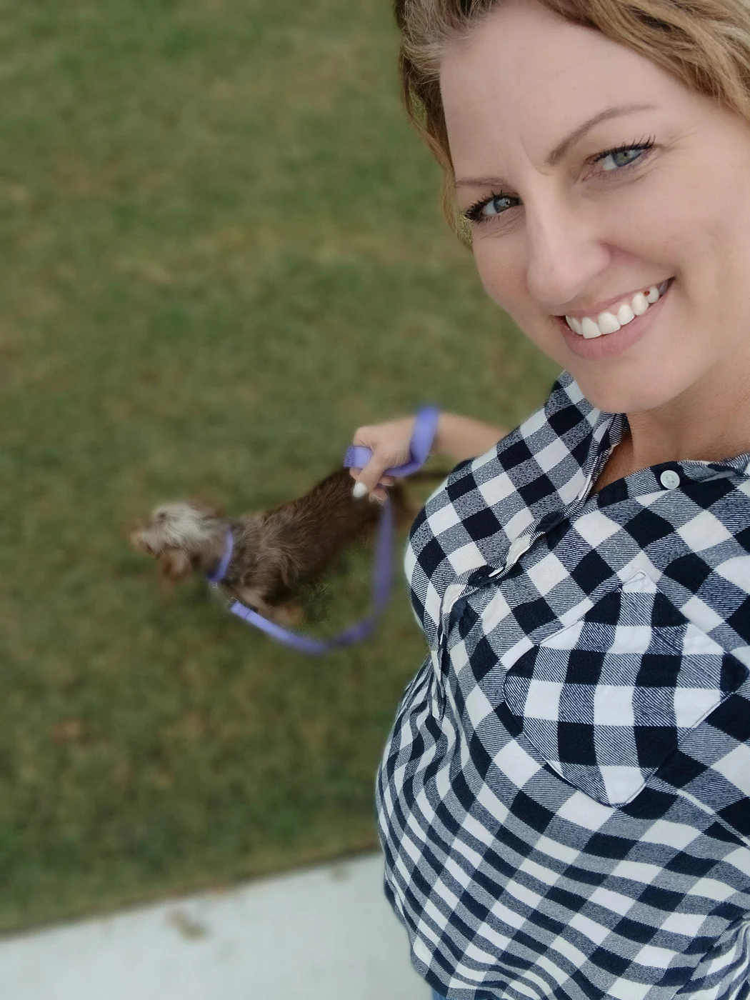
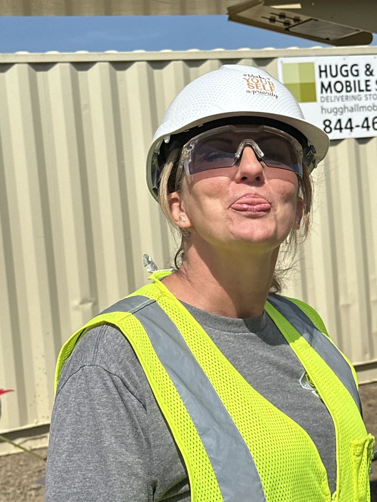
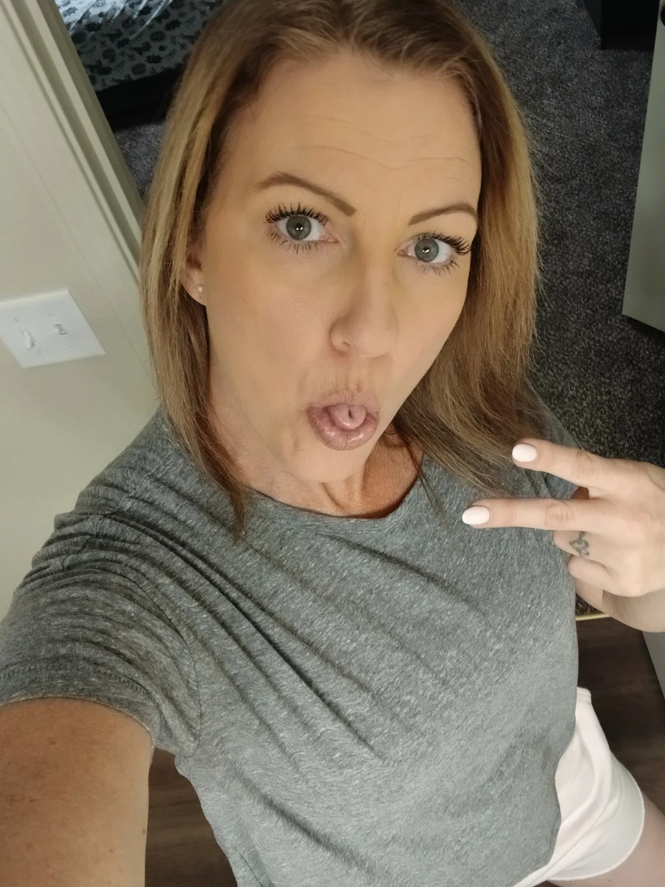

How it started
About Cell to Self
Cell to Self started when I had been out of prison for about a month.
I didn’t come home magically put together. I came home confused, grateful, overwhelmed, and trying to figure out how to use a debit card without panicking.
So I started writing.
Not after I figured everything out. While I was figuring it out.
This isn’t a before-and-after story. It’s a during.
It’s what happens when you’re free, still scared, still laughing, still learning how to live in your own skin again, and you decide to tell the truth about it.
Sometimes that truth is deep.
Sometimes it’s ridiculous.
Often, it’s both.

The whole messy middle
What This Space Is
Cell to Self is life after prison, written while I’m still living it.
I write about reentry, recovery, faith, motherhood, grief, relationships, work, and rebuilding a life I wasn’t always sure I’d get to have.
I write about the big stuff, but honestly, some of my favorite stories are about the little things nobody warned me about.
Debit cards. Probation travel passes. Buying a car. Dating in my 40s. Naming my Wi-Fi “Mine.” Running out of toilet paper and realizing prison had apparently rewired my brain.
Because freedom isn’t only found in the huge milestones.
Sometimes it’s hiding in the most ordinary Tuesday imaginable.
Some days this space is reflective. Some days it’s light. Most days, it’s a little bit of both.
If you’re looking for a blueprint, this isn’t it.
If you’re looking for honesty, humor, and a little hope hiding in real life, you’re in the right place.

Taking back the narrative
Why I Write This Way
For a long time, other people got to tell my story.
There were headlines. Court records. A mugshot. Case numbers. Google. People who knew one chapter of my life and thought they knew the whole book.
There were also people in my personal life who told their version of who I was so loudly that sometimes I believed them.
Writing gave me something back: my voice.
I wrote in prison. I wrote when I came home. And somewhere along the way, I realized I didn’t have to wait until I was healed, successful, stable, or certain about anything before my story was worth telling.
So I write from right here.
Sometimes I’m proud of the woman on the page. Sometimes I’m not. But she’s honest.
That matters more to me now.

More than one chapter
About Me
I’m Amy.
I’m a mom, a writer, a woman in recovery, and someone rebuilding a life after prison.
I’m also someone who laughs at wildly inappropriate moments, overthinks everything, believes deeply in grace, and is still learning how to trust ordinary happiness.
I love hard. I feel everything. I have made mistakes that changed the entire direction of my life.
But I am not only the worst thing I’ve ever done.
And neither are you.
I believe people are more than their worst chapter. I believe freedom is complicated and beautiful. I believe redemption doesn’t always arrive with dramatic music playing in the background.
Sometimes it looks like going to work, paying a bill, apologizing, starting over, or making it through a Tuesday without completely losing your mind.
That counts too.

Begin at the beginning
Where to Start
If you’re new here, start with the first letter I wrote after coming home from prison.
It begins with me standing in a gas station, trying to buy a drink, and discovering the modern debit-card reader.
Very dramatic stuff.
But that tiny moment was the beginning of everything.
Start With Tap to PayThen explore the stories about reentry, recovery, relationships, work, family, grief, faith, and the strange little miracles hidden inside ordinary life.
Welcome to Cell to Self.
I’m glad you found your way here.